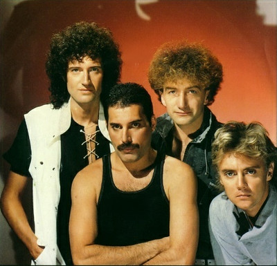
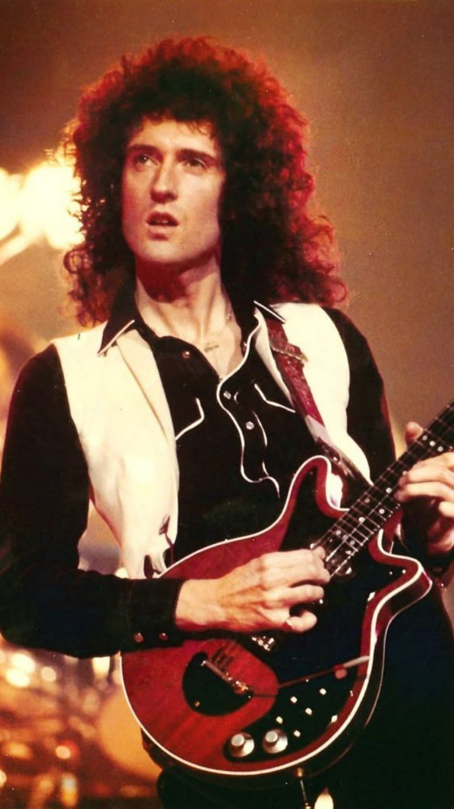
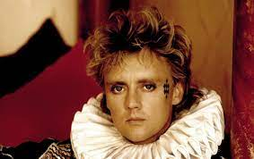
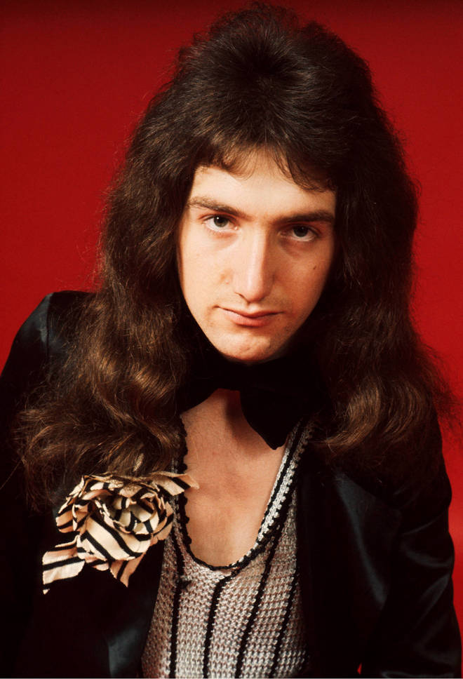

In this webpage I will be talking about the band Queen and why I love it so much!
The famous rock band Queen was created all the way back in 1971. Before Freddie Mercury joined the band, Brian, Roger, and John were part of this band called "Smile". They soon grew in popularity in the 1970's with the big hit "Crazy Little Thing Called Love", that song even reached #1 on the Billboard hot 100 chart, staying there for 4 cosecuative weeks. The lead singer Freddie mercury was known as a legend and is still known as a legend to this day. He changed many lives and he still does, even mine. My love for Queen has been almost 3 years now, but I've been listening to their songs since I was little. Me being in love with rock music, Queen was my cup of tea. Their creative thinking and how they make music together amazes me, they inspire me so much to not give up on what I love.
"I always knew I was a star, and now the rest of the world seems to agree with me." - Freddie Mercury
| Freddie Mercury | Lead Singer | |
| Brian May | Guitarist |  |
| Roger Taylor | Drummer |  |
| John Deacon | Bassist |  |